The two Missions API gaps closed: exact weekly mission XP and the Weekly
Strategist progress payload, with the handoff's 1 of 2 wins
meter at 0, 1 and 2 wins. Renders are 2× device-scale PNGs from the headless
CDP harness with fixture data at 360, 390 and 430. Write corrections in
NOTES.md.
/missions — Repeating tab; progress: { current: 0, target: 2 }; empty trough, “0 of 2 wins”
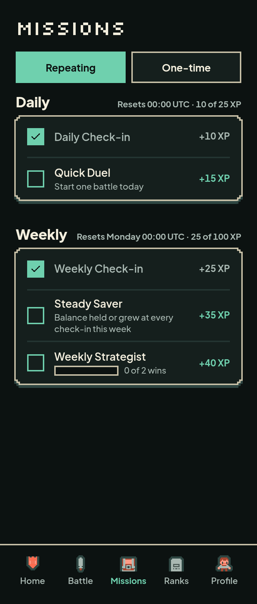
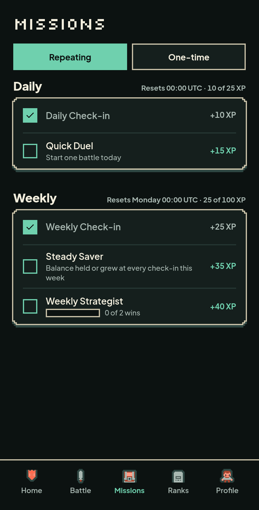
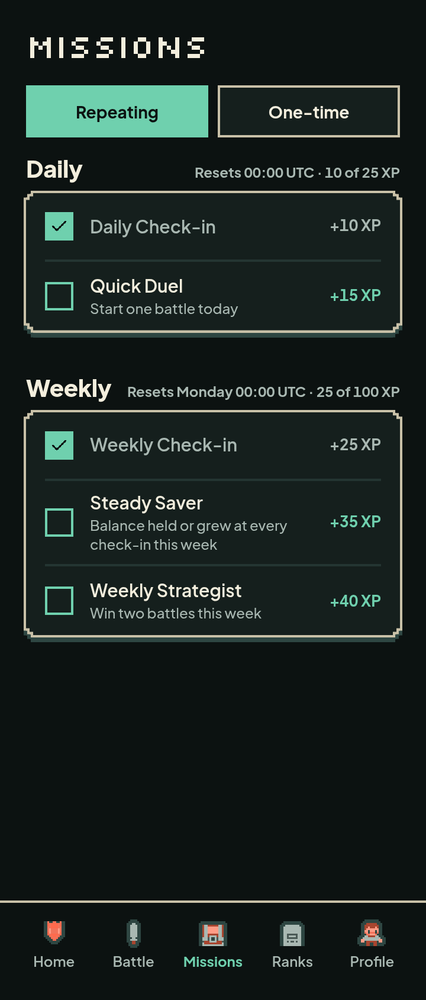
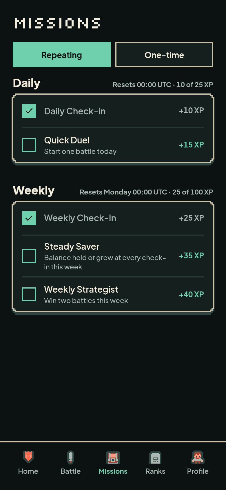
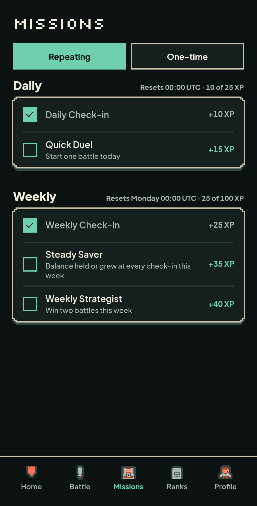
/missions — progress: { current: 1, target: 2 }; half-filled mint meter, “1 of 2 wins”
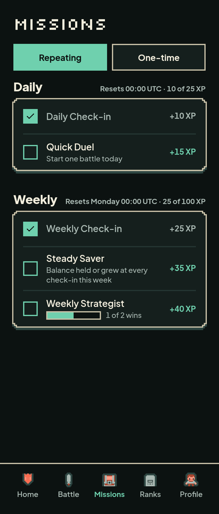
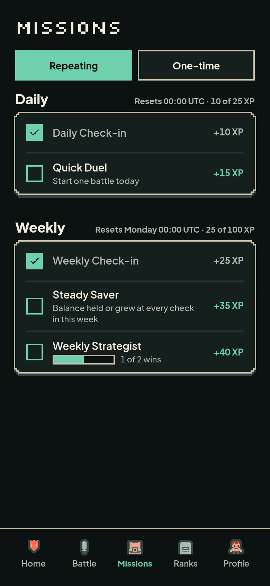
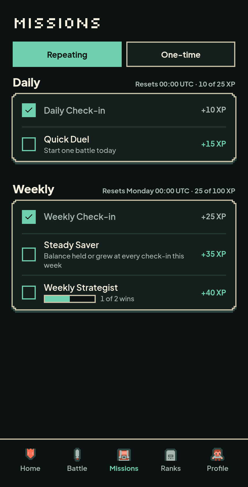
/missions — progress: { current: 2, target: 2 }; full mint meter, completed row, muted label and XP
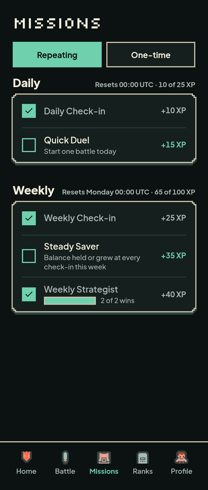
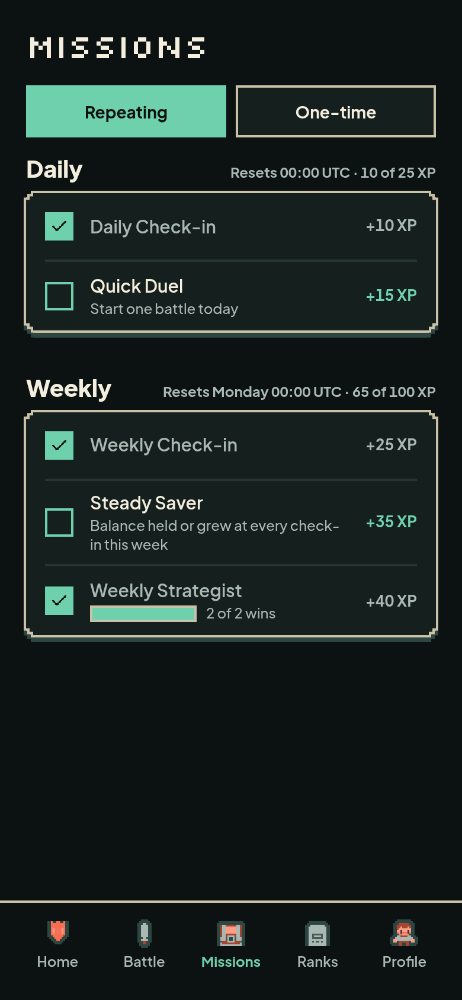
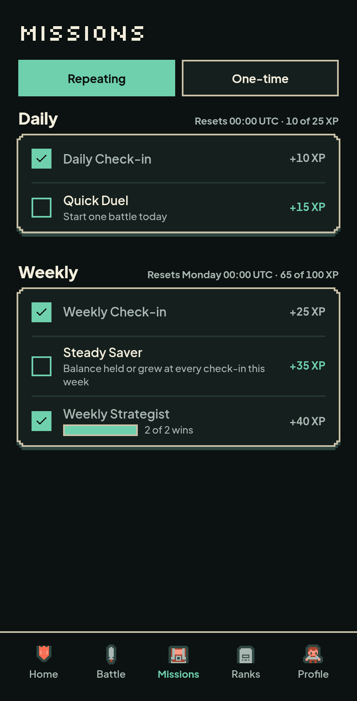
| Check | Result |
|---|---|
| Rows audited | 9 (3 states × 360/390/430) |
| Horizontal overflow | 0 on every state and width |
| Wide elements | none |
| Targets under 44×44 | none (tabs are 44px; the meter and rows are not interactive) |
| Minimum font | 12px |
| Focus | every tab stop in view, uncovered, 2px mint outline |
| Weekly Strategist row | 58px at 360/390/430 |
| Meter | 90×14px, role="progressbar", aria-valuenow 0/1/2 of 2, not focusable |
Raw audit: ../audit/final-audit.jsonl.
The progress line replaces the Weekly Strategist description, as the handoff draws it, so the row keeps its 58px rhythm. The meter is the existing Foundation 2 primitive at the handoff's 14px height and 90px width. Completed rows keep the meter and “2 of 2 wins”, with the label and XP muted. AI wins never count. The weekly XP counter is now the exact sum of the week's weekly mission rewards; this screen shows 25 of 100 XP at 0/1 wins and 65 of 100 XP at 2 wins because the fixture leaves Steady Saver open. The all-done screen's strategist row is the 2-win render; no other Missions state changes.
The real Supabase backend is not configured in this sandbox. Renders use
fixture data; the database and Nimiq Pay pass are the deployment step in
NOTES.md.